Latest
California’s Divided Cannabis Packaging Rules Have Brands Scrambling Before They Ship
Learn how California's changing cannabis packaging and labeling mandates impact brand shipments and how CannDelta's compliance audits prevent product holds.
Learn how California's changing cannabis packaging and labeling mandates impact brand shipments and how CannDelta's compliance audits prevent product holds.
Learn how California's changing cannabis packaging and labeling mandates impact brand shipments and how CannDelta's compliance audits prevent product holds.
Federal courts are split on cannabis residency rules, and a new Supreme Court petition could decide whether states can favor in-state applicants.

The Missouri microbusiness lottery results 2026 are officially in, marking the beginning of the final scheduled round of the state’s cannabis microbusiness licensing program. On September…
The Virginia cannabis draft regulations have officially arrived, giving prospective operators their clearest look yet at what the Commonwealth’s long-awaited adult-use cannabis market will look like.…
Learn how large-scale cannabis cultivators file DEA Form 225 and prepare for 21 CFR Part 1318 nominal purchase-and-resale rules and $113/kg fees.
Rhode Island reopened adult-use retail applications in August 2026. Learn the new CCC timelines, qualified lottery rules, and state market reports.

As state Total THC rollouts compress the hemp market, operators must transition to adult-use systems. Learn how to map your regulatory migration safely.
The new Total THC mandates are shifting hemp operators into federal enforcement zones, stripping them of bankruptcy protections. Learn how to protect your assets.
Navigate ad bans legally. Discover why high-authority organic cannabis seo is the only compliant, sustainable way to scale your brand safely.
Maryland conditional cannabis licenses expire Summer 2026! Don't risk rescission by the MCA. Learn how CannDelta helps you clear final hurdles and secure your license
Preparing for Missouri's final 2026 microbusiness lottery? Learn how the DCR's strict new anti-predatory rules impact your microbusiness license application.
Effective April 28 2026, the DEA moved medical marijuana to Schedule III. Learn about IRS 280E tax relief, expedited DEA registration, and federal compliance for state licensees.
Breaking News! Virginia’s adult-use cannabis market has hit another setback after Gov. Abigail Spanberger vetoed legislation that would have launched legal recreational cannabis sales in the state. Learn More Virginia Cannabis Legalization Virginia’s cannabis industry remains on the brink of a major breakthrough. While the road to a regulated retail market has not been straightforward, […]
President Donald Trump’s recent executive order directing federal agencies to accelerate the rescheduling of cannabis has reignited debate across the U.S. cannabis industry. While the announcement has generated widespread attention, the legal, regulatory, and commercial realities remain far more complex than early headlines suggest. On December 19, 2025, cannabis attorneys FL Gorman, Jason Klimek, and […]
Learn how to apply for a dispensary license in Nebraska. Find out the rules, requirements, and steps to start your medical cannabis business.
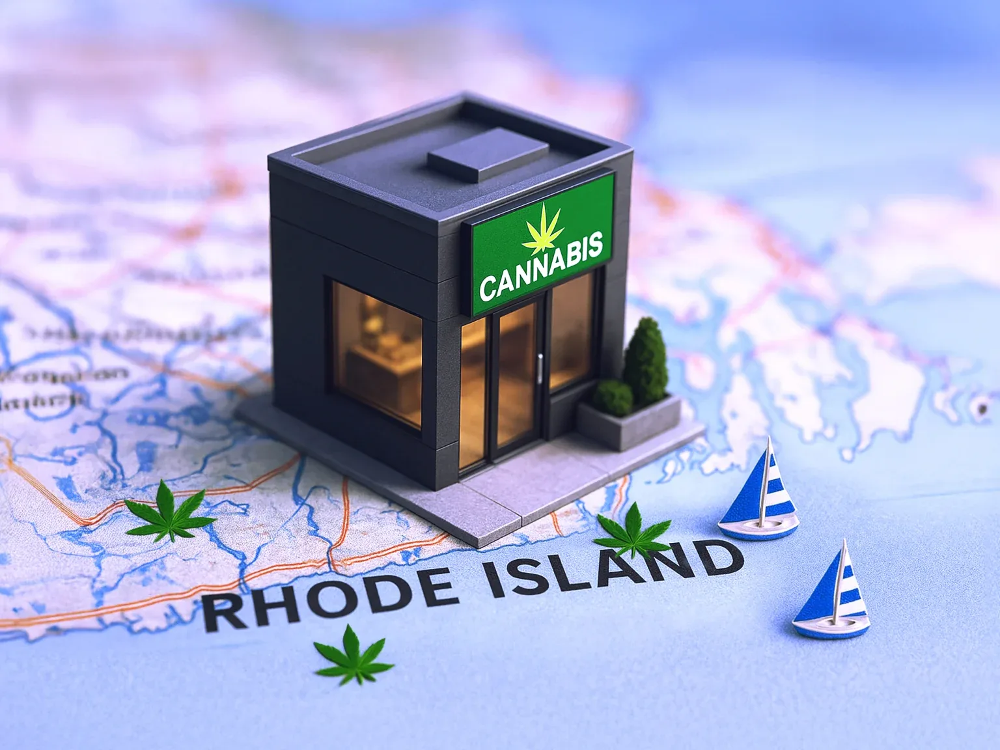
Learn how to apply for a retail cannabis license in Rhode Island, including eligibility, zoning, fees, and the official checklist steps.
Kansas City is set to welcome cannabis consumption lounges. Learn what this means for regulations, social equity, and Missouri’s growing cannabis market.
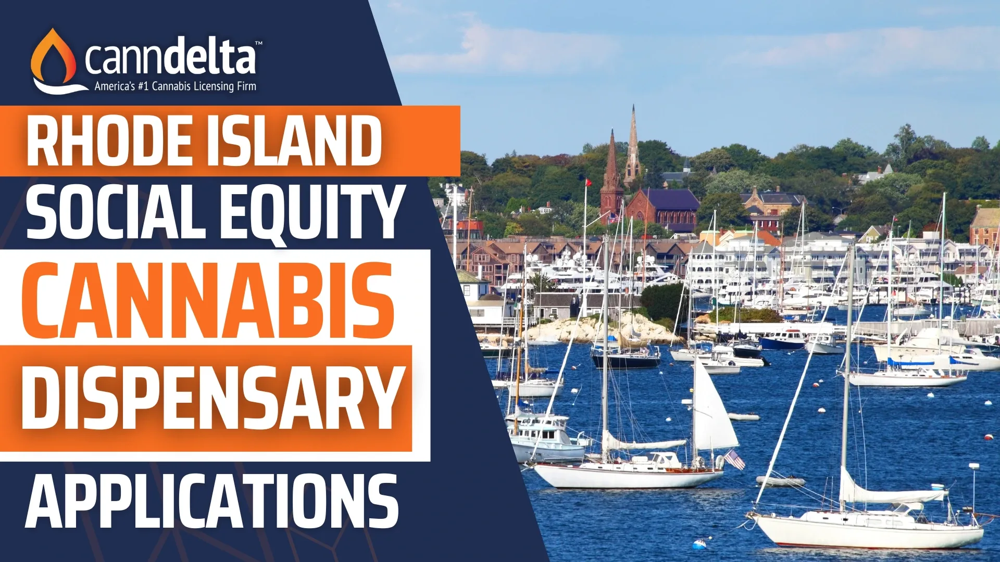
Learn how to become Social Equity Verified in Rhode Island for the 2025 Cannabis Retail License application window!
Before a cannabis dispensary in New York can officially open its doors, it must undergo and pass an on-site inspection by the Office of Cannabis Management (OCM). This inspection is a key milestone that confirms the business is compliant with state regulations and ready to operate safely and responsibly. So how can dispensary operators prepare […]
Explore the 2025 wholesale cannabis market. Learn key trends, compliance rules, supply chain roles, licensing, and business models for cultivators, processors, and retailers.
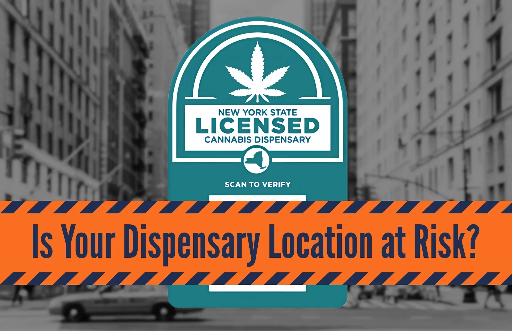
The NY Office of Cannabis Management (OCM) revised its proximity compliance rules, affecting 152 dispensaries and applicants. Learn how new measurements impact license renewals, relocation, legal options, and pending legislation.
Understanding the Cannabis Supply Chain in 2025 Cannabis businesses lose revenue every year because their supply chains have inefficiencies, most of which can be avoided with better planning. The cannabis supply chain involves multiple regulated stages, and making errors along the way can negatively impact their entire operation. The cannabis supply chain connects every step […]
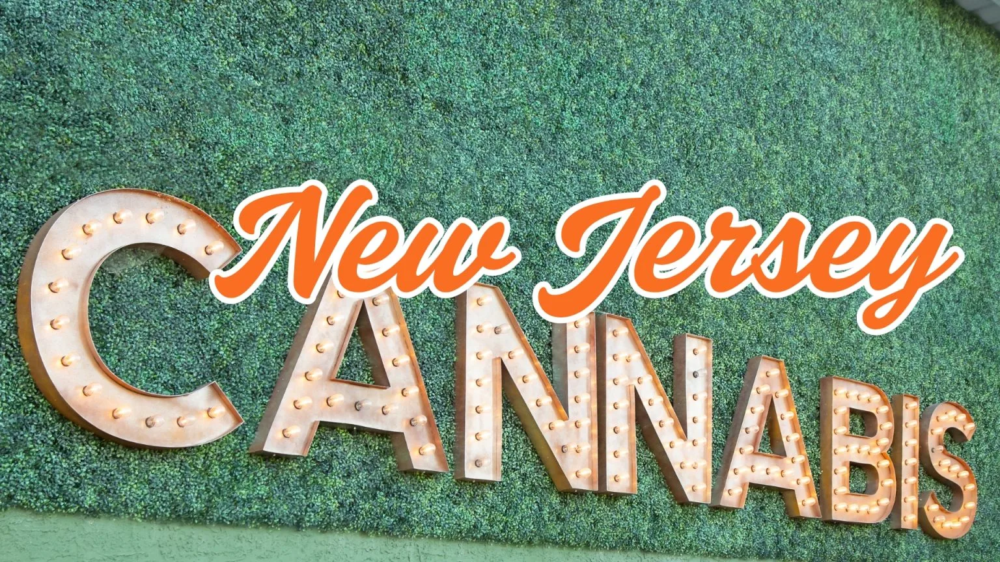
Opening a dispensary in New Jersey starts with securing a cannabis retail license. If you want to launch your dispensary in 2025, there is no better time to start preparing. In this blog, we outline the key requirements and full process of how to open a dispensary in New Jersey, from licensing to location, municipal […]
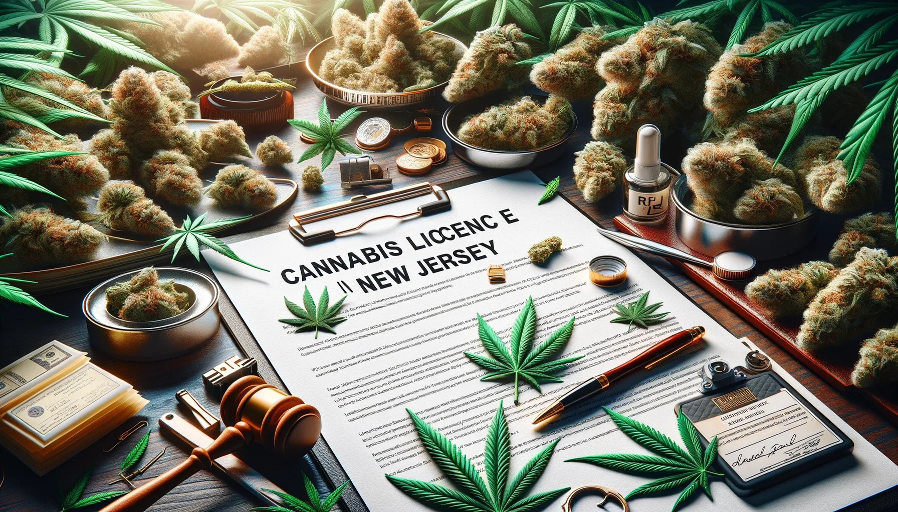
Discover how to navigate the New Jersey cannabis licensing process. Your solution to starting a successful cannabis business in NJ awaits.
Learn how to apply for Utah’s new medical cannabis pharmacy license in 2025, including eligibility, requirements, deadlines, and FAQs.
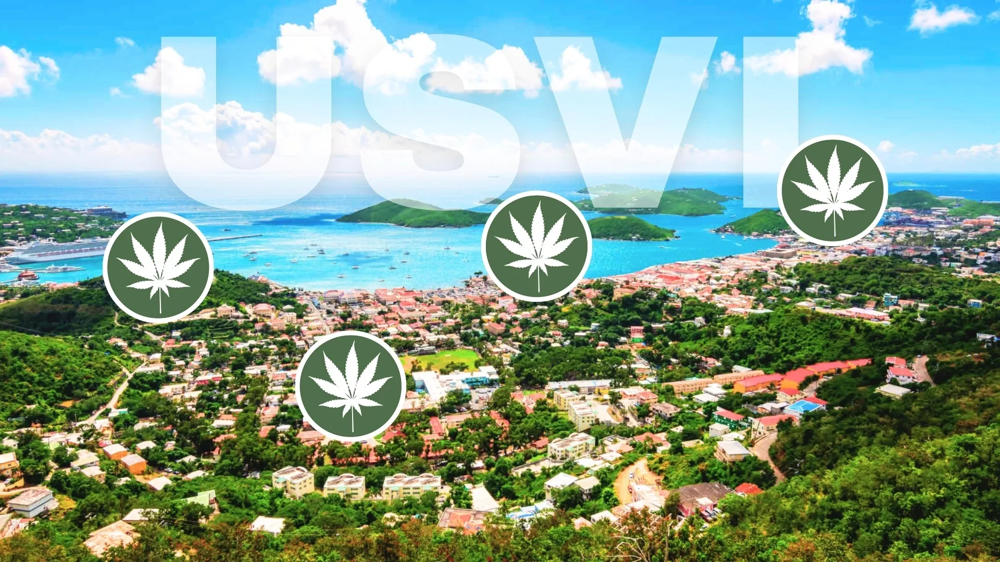
How To Open a Dispensary in the US Virgin Islands in 2025 The US Virgin Islands (USVI) has officially opened its application window for adult-use dispensary licenses, marking a major milestone for the territory’s growing cannabis market. As of July 8, 2025, the Office of Cannabis Regulation (OCR) is now accepting applications for adult-use dispensaries […]
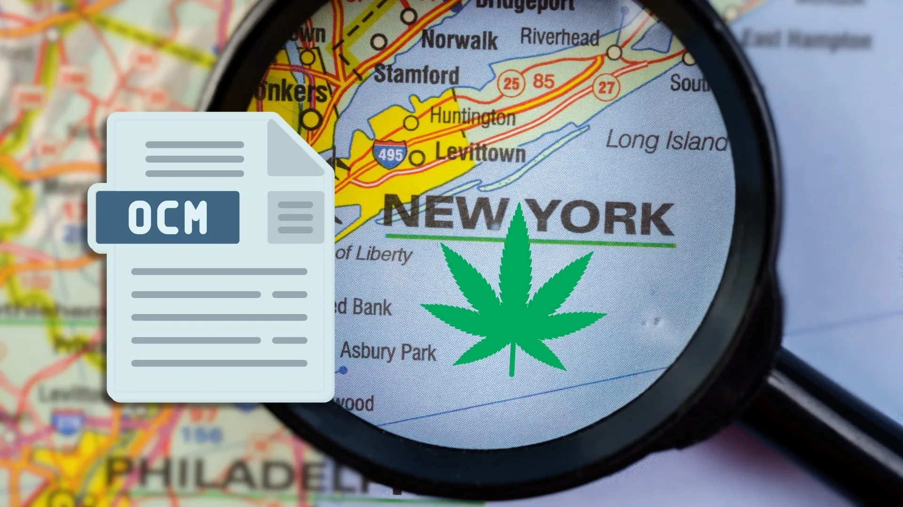
New York Dispensary – How to be Prepared for an OCM Inspection Before a cannabis dispensary in New York can officially open its doors, it must undergo and pass an on-site inspection by the Office of Cannabis Management (OCM). This inspection is a key milestone that confirms the business is compliant with state regulations and […]
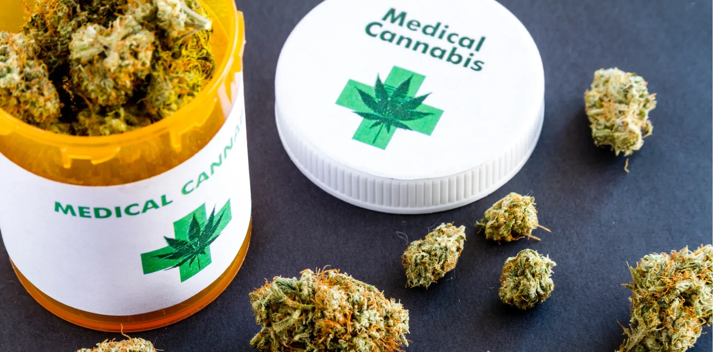
Learn how to legally access medicinal cannabis in Western Australia through SAS or AP pathways. Understand eligibility, prescriptions, and where to buy cannabis.
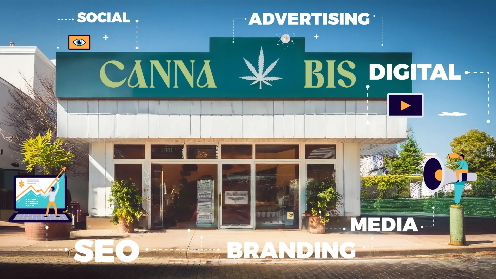
Discover compliant and effective ways to market your cannabis dispensary in New Jersey in 2025. Learn SEO, community outreach, digital strategies, and CRC rules to grow your brand legally and sustainably.
Discover key factors, tips, and mistakes to avoid in cannabis cultivation facility design. Ensure efficiency, compliance, and optimal growth with expert insights.
Health Canada plans to reclassify CBD as a Natural Health Product, opening non-prescription sales under strict regulations.
Increase cannabis brand awareness in California while staying compliant with strict advertising rules and federal regulations.

Qualified in Minnesota? Discover the essential steps to secure your cannabis license and launch your business.
Thinking of opening a retail cannabis dispensary? Find all of the essential steps including layout designs, zoning laws, and more.
Delaware Post-Licensing guide: Complete requirements, secure permits, and launch your cannabis business successfully.
Stand out in the cannabis industry with smart dispensary marketing. Explore SEO, local search, customer retention strategies, and more for sustained growth.

Discover 2025 grant opportunities for Minnesota cannabis businesses, including funding programs like CanRenew, CanGrow, CanStartUp, and more. Learn about eligibility, deadlines, and resources to support your cannabis venture.
Looking to open a dispensary in Rhode Island in 2025? Learn about CCC regulations, license types, social equity programs, fees, and key deadlines for cannabis retail businesses.
Explore how Donald Trump’s cannabis reform, including marijuana rescheduling and support for state autonomy, could reshape the cannabis industry with tax breaks, banking access, and federal legalization opportunities.
Ready to open a cannabis lounge in NJ? Learn the step-by-step process for obtaining your consumption lounge license, including requirements, fees, and municipal approvals.

Step-by-step guide to applying for Minnesota’s Cannabis Microbusiness License in 2025. Learn requirements, key dates, and how to maximize your chances of success.
A Beginner’s Guide to Cannabis Cultivation in Ontario The Ontario cannabis market is the largest and most active in Canada. Since the legalization of both recreational and medical cannabis in 2018, the market has seen tremendous growth. As a result, many individuals and businesses have shown keen interest in exploring the opportunities it offers, including […]
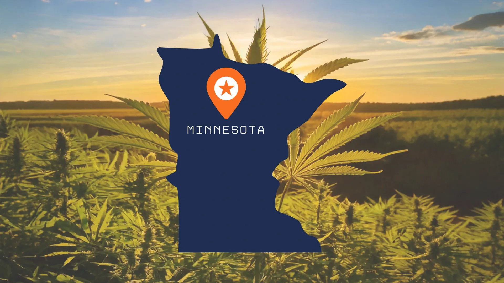
Find out how to apply for Social Equity Verification in Minnesota for 2025. This guide explains eligibility, the verification process, and how to increase your chances in the cannabis licensing lottery.
Learn how to access medicinal cannabis in Western Australia, including prescription pathways, TGA approval, and regulations.
Become the most popular cannabis dispensary in your area by leveraging social media marketing techniques! Here's how...
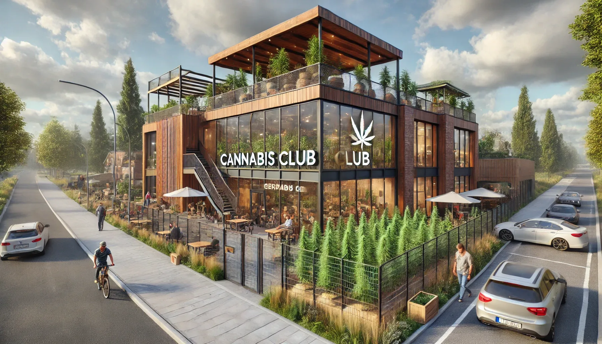
Germany's 2024 cannabis legalization allows access through regulated social clubs. Here are all of the key rules social clubs need to follow!
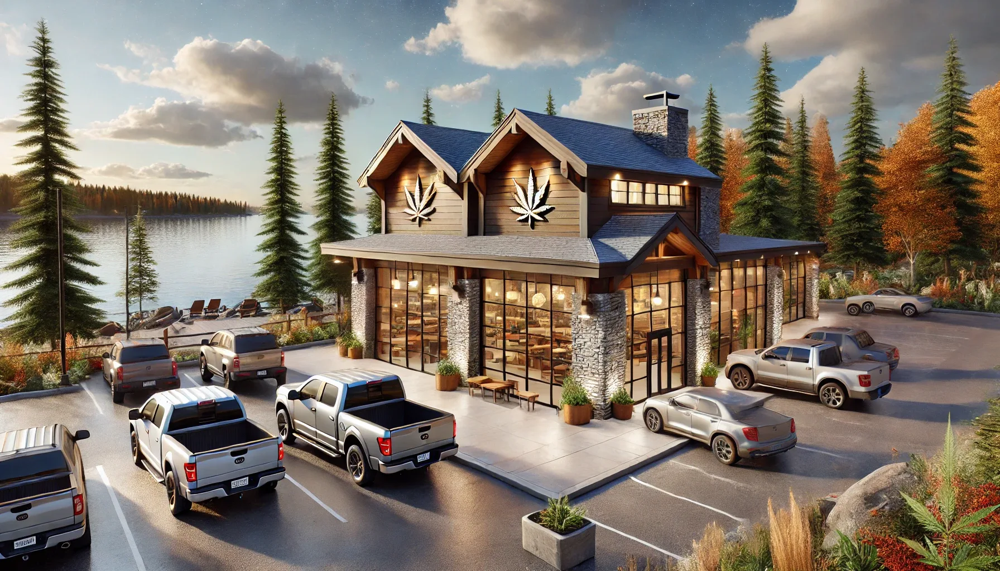
There are three kinds of dispensary licenses in Minnesota. The Microbusiness, Mezzobusiness, and Retail Dispensary Licenses...
New York's Processor Type 3 Branding License is a great way to enter New York's cannabis market! Here's what you need to know.
Sonoma County is accepting cannabis applications until November 7, 2024. Here's what you need to know to apply!
Canadian Sensory Research Licence holders now need to get an NTRC licence before December 2, 2024. Here's what you need to know.
Want to start a cannabis cultivation business in Minnesota? There are three ways you can become one of Minnesota's first cannabis businesses.
Delaware's cannabis license application window is closing soon! Here's why you NEED to apply before it's too late!
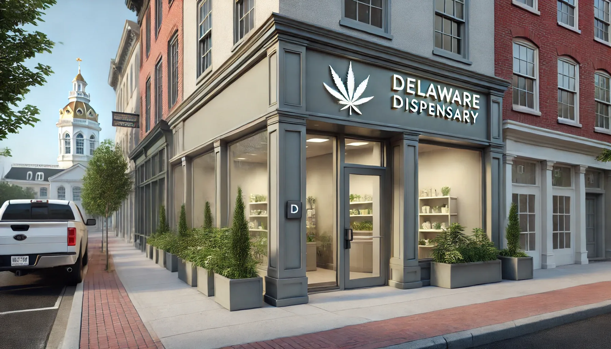
Delaware's cannabis license lottery is right around the corner! If Here's what you can do to maximize your chances before the window closes!
Minnesota Cannabis Update: August 2024 The preapproval application period for Minnesota cannabis licenses closed on August 12, 2024, shedding light on the future of the state’s cannabis industry. If you received social-equity (SE) status and submitted your preapproval application, here’s what you should know before the lottery. What is License Preapproval? Preapproval for a Minnesota […]
Advertising your cannabis business, brands, and products goes against the Google Ads policy. Read more about Cannabis Google Ads here!
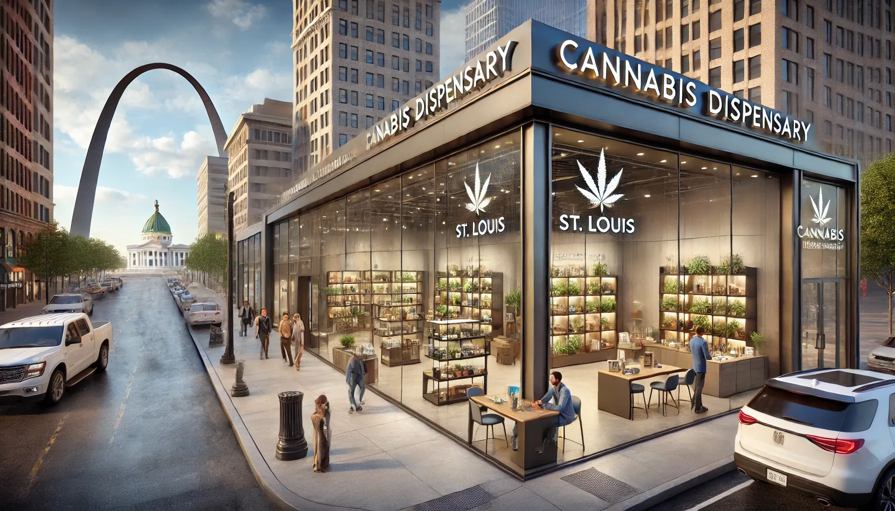
Missouri's second round of Microbusiness Licenses have been awarded. Whether or not you were awarded a license, here's what's next!
Effective and impactful marketing can bring your cannabis business to the next level! Here's what you need to know about cannabis marketing strategies
Now is the best time to start a NY cannabis business. Learn all about the pros and cons of both buying and starting a cannabis business!
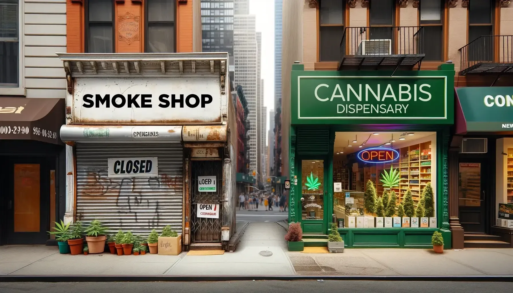
Are cannabis businesses profitable in New York? Find the signs of a good cannabis market and all of the newest NY cannabis market data here!
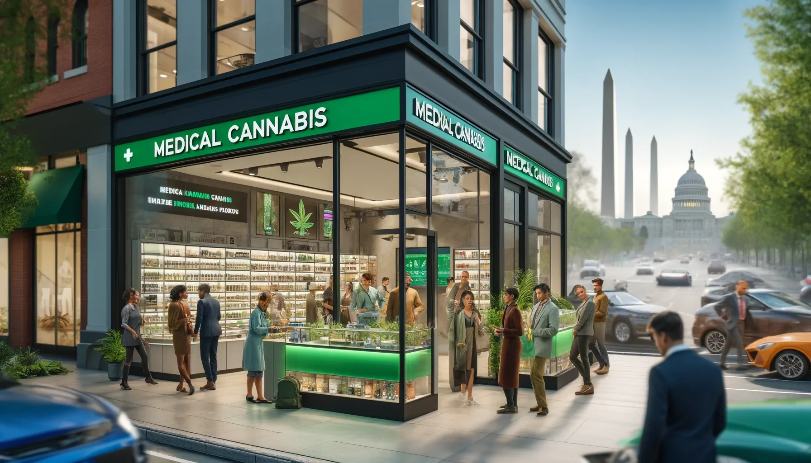
DC's Standard medical cannabis Retailer & Internet Retailer license application window opens July 1, 2024. Here's what you need to know.
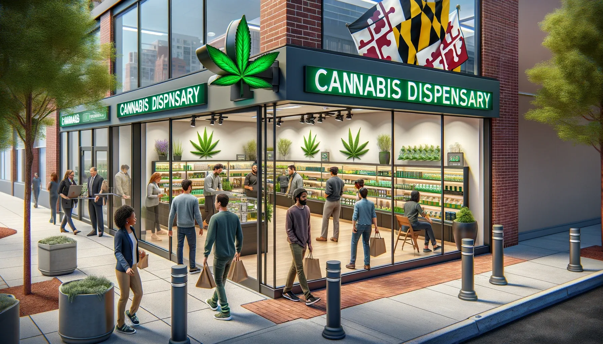
Converting a Maryland conditional cannabis license into a full license can be challenging. Learn all of the requirements in this guide!
Starting a cannabis business can be costly, and many people require financial assistance. Here's how you can fund your cannabis startup.
Want to start a cannabis business, but unsure of whether to contact a cannabis consulting firm or cannabis lawyers? Learn more here.
Having a GMP, GACP, GAP, or other certification can benefit your cannabis business. Learn all about good practice certifications here!
Are you a New York retail dispensary license holder who doesn't know what to do after getting a license? This guide has all of the key info!
Plans to reclassify cannabis from a Schedule 1 to Schedule 3 substance might result in an easier future for cannabis businesses. Here's how.
Petition to add adult-use recreational cannabis to the July 8, 2024 ballot is circulating through North Dakota. 15,000+ signatures required.

Discover everything you need to know about building a compliant website for your cannabis business, including the cannabis website design.
A comprehensive guide to social media marketing for cannabis businesses. Find info about content, planning, engagement, pro tips & more!
Everything you need to know about applying to open one of Surrey's 12 retail cannabis dispensaries in 2024. Application info, fees, & more!
A cultivator and processor's guide to core of every cannabis product: kief, hash, and extract. Learn how each is produced, and how it's used.
Make the most of your location and store layout to maximize your dispensary sales! Learn more about target markets, dispensary layouts, & more
Germany legalized recreational cannabis on April 1, 2024. This is the first pillar of CanG legislation. Cannabis clubs coming July 1, 2024.
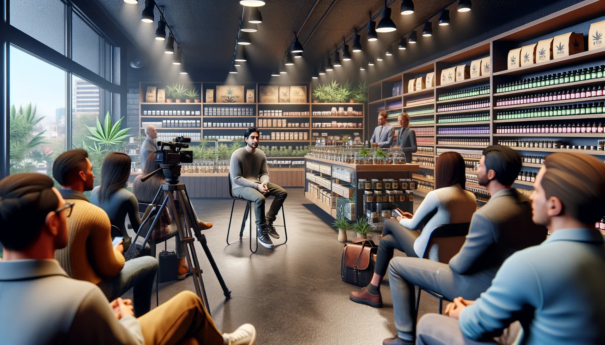
Five critical keys to success for New York dispensary license holders eager to open their dispensary and generate long-term success!
Catch up on Maryland's March 14 social-equity lottery drawing. Applicants selected are in the running for conditional licenses.
Canada's cannabis industry is seeing interesting shifts in consumer favourites. Read more about the product that's ruling dispensaries!
DC's medical cannabis retailer licenses are available from March 1, 2024, to April 30, 2024! Learn about this Social-equity application window.
Here's what you can gain from attending some of North America's top cannabis events in 2024. Join CannDelta at all of these events!
Everything you need to know about business continuity plans (BCPs) in New York cannabis. Making a BCP that meets OCM requirements.
New York Cannabis: February 16, 2024 CCB Meeting News and Resolutions The Office of Cannabis Control Management (OCM) held a board meeting on February 16, 2024, revealing that they might begin receiving, and award cannabis license applications on a rolling basis. This decision also contrasts their previous statements determining they would only be distributing 250 […]
Maryland's second application round is expected to open May 2024. Learn all about available licenses, expenses, how to apply, and more with Maryland cannabis consultants!
Start a cannabis brand with a New York Type 3 Processor Licenses. International businesses and multi-state operators can apply.
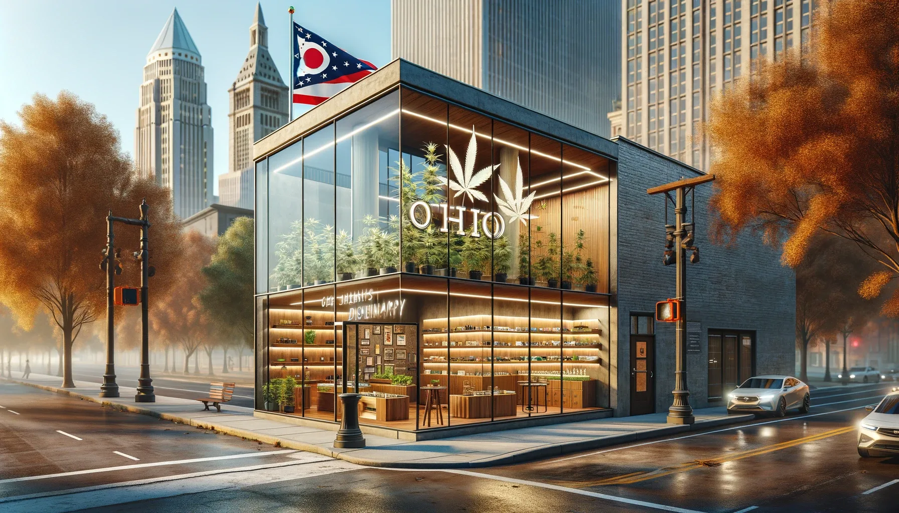
Ohio's cannabis market is looking at a promising future with new proposed rules. Dual-use licenses give medical marijuana facilities a cost free path into the adult-use market. Cultivators can open at least one dispensary. New two-phase dispensary location application process.
New York OCM Application Cannabis License Updates for Non-Provisional Review List was Announced at the Recent Webinar on January 16, 2024.
Navigate the post-application process for a NY cannabis license with expert tips on handling deficiency notices and next steps.
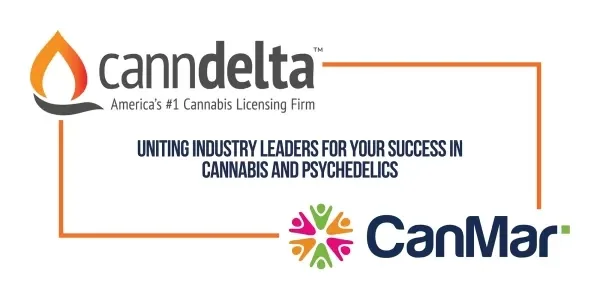
CannDelta and CanMar Ventures unite for a potent cannabis synergy. From licensing to talent, our partnership offers comprehensive solutions for industry success!
Discover NY's cannabis market: New consumption sites and nurseries, shaping the future of legal cannabis in New York
The New York Cannabis Microbusiness is a complex license that allows for the operator to conduct the activities of six different license-types
CBN is a popular minor cannabinnoid that is commonly found with other major cannabinnoids. It is a powerful sleep aid and is non-impairing.
Issue 2 is on the ballot for cannabis legalization, set for November, to allow Ohioans to legalize adult-use recreational weed dispensaries.
Unlock the potential of New York's cannabis industry. Discover the essential steps, criteria, and insights on securing a cannabis license in NY. Your gateway to a booming market awaits!
Want to start a cannabis microbusiness in New York? Join us and dive into the world of Cannabis Microbusiness. Discover ownership nuances, explore diverse activities, and master the application process.
Uncover the intricacies of the New York cannabis license process, recent court rulings, and the industry's unfolding landscape.
Master the Maryland cannabis industry with our expert guide. Learn the ins and outs of the Cannabis License Application in Maryland!
Unlock the secrets to launching a cannabis business in New York. Our expert insights guide you through licensing, compliance, and operational excellence. Your success journey starts here
Learn more about different types of cannabis licenses in New York State’s cannabis industry. We’ll be your guide to understanding and obtaining the right license for you.
Explore the evolution of New York cannabis, from licensing challenges to equity debates. Dive into the Big Apple's budding industry today!
CannDelta addresses Mastercard's restrictions on dispensary transactions, highlighting concerns over fees and regulatory impact. Explore our insights on the urgent need for legislative solutions like the SAFE Banking Act
A core objective of the CGS is to support those licensees who have accumulated inventory from the previous growing season to reach consumers.
Navigate New York cannabis laws with our guide, highlighting the latest on dispensaries, earnings, and recent enforcement actions.
Comprehensive insights on New Jersey and New York Cannabis laws, licenses, and opportunities in 2023

CannDelta can guide you through the Cannabis Growers Showcase (CGS) application process. Get connected with cannabis cultivators and start growing today.
Stay updated on New York’s cannabis licensing timeline with CannDelta. Get the latest news on the state’s Cannabis Control Board announcement.
New York Cannabis License Guide - How to Apply and How a Weed or Marijuana Consultant Can Help Save Your Money and Time to Open
What is Section 280E of the IRC that affects cannabis businesses? Has my state decoupled from it? What are some common tax strategies?
Learn the essential steps to starting a successful cannabis dispensary, from finding investors to staff training.
Discover why a cannabis consultant, not just a cannabis lawyer, is vital for your cannabis business.
Discover the innovative concept of a New York consumption lounge, paving the way for a controlled, enjoyable cannabis experience.
Uncover the Manhattan Cannabis Crackdown: A comprehensive guide to recent regulatory measures shaping the landscape of cannabis enforcement in New York City with CannDelta.
Explore how liquor store owners can leverage their unique skills to seize opportunities in the burgeoning cannabis industry, increase revenue and expand businesses.
DASNY Annouces significant strides in improving the rollout of retail cannabis licenses in the state of New York
New York Regulators Resolve Lawsuit, Clearing the Path for Dispensary Licenses in Finger Lakes Region. Learn more about this significant change in the cannabis licensing industry.
Find Dispensary Location Options for a CAURD License near you: Fund Locations, Licensee Identified Locations, and more!
Navigate NY's cannabis licensing process with our guide on processor license requirements, costs, and application steps.
Discover the Top 5 Business Ideas for New York in 2023. Capitalize on dynamic, profitable opportunities in NYC's bustling economy.
Impact of New York cannabis laws on the NY marijuana industry. Roles of regulatory bodies, social equity, & opportunities in the NY cannabis business.
Navigate New York's cannabis cultivation licensing process with our comprehensive guide. Discover fees, regulations & preparation steps.
Discover how to secure a cannabis distributor license in New York. Learn the requirements, regulations, and potential in the cannabis business.
The gross revenue for cannabis dispensaries across the US ranges from $2.1M to $3M! Learn about the industries health and growth here!
Become one of first 48 marijuana microbusinesses. Discover Missouri microbusiness license requirements eligibility, costs, and application steps.
The process of acquiring a Missouri cannabis license. Explore costs, eligibility, & application steps to start your journey in MO cannabis industry
Are you interested in learning about the cost of obtaining a New York cannabis license? Learn that and more on our blog!
Mississippi's marijuana dispensary laws updated. Faster application processing, new product sales. When will Mississippi dispensaries open?
The Environmental Farm Plan program (EFP) is a farm improvement, environmental and education program learn more here!
We wanted to connect with Thillanayagam to talk through issues he sees and how the cannabis supply and demand may balance out in the future.
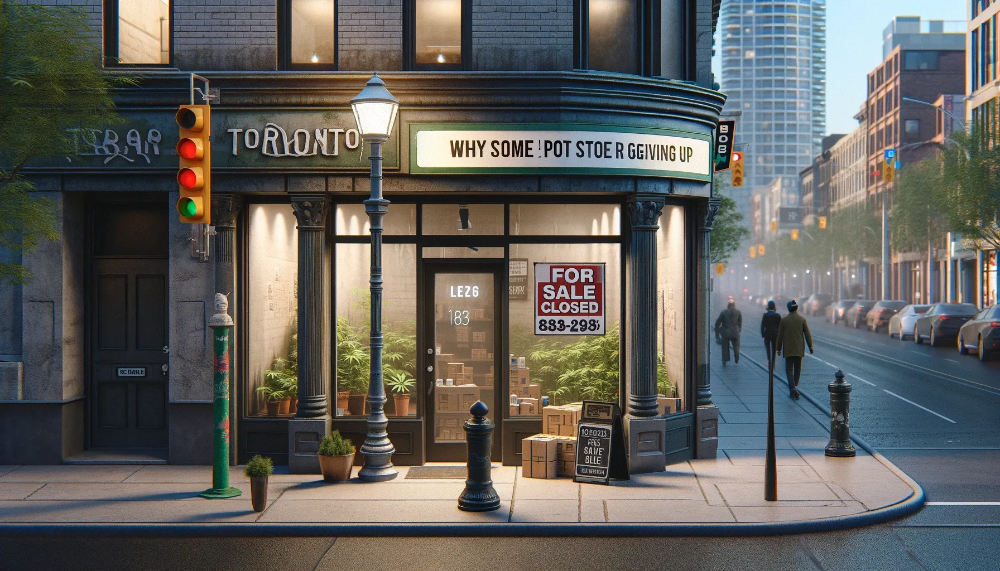
Explore the challenges facing Toronto Cannabis Stores as regulations and competition reshape the industry landscape. Learn from industry insights and the experiences of entrepreneurs like Michael Motala.
CannDelta analyzes Health Canada's new approach to enforcing cannabis regulations and discusses the implications for cannabis businesses.
Learn more about Namaste Technologies' launch of CannMart, making it easier for francophone Canadians to access medical cannabis products.
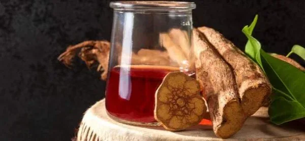
CannMart applies for a Psychedelics Dealers License, making it one of the first companies in Canada to seek permission to sell psychedelics.
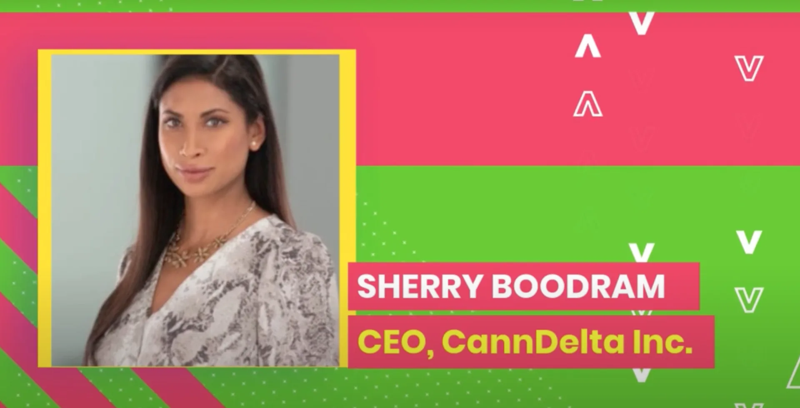
CannDelta VP of Regulatory Affairs Sherry Boodram discusses the regulatory landscape of medical cannabis in Canada and around the world.
Discover CannTrust's journey with Health Canada—licenses suspended, then reinstated amid controversy. Learn about the legal aftermath and regulatory complexities.
In this article, we’ll look at the various services that can help you install helpful cannabis dispensary point-of-sale software.
In this article, we guide you through the development and implementation of (SOPs), which are a critical component of the cannabis industry.
The first wave of employees will set the brand's tone, and be an integral part of your journey to becoming a great cannabis dispensary owner.
Get the cannabis retail store coverage you need to be successful and compliant. Learn what is required and how to protect your business now.
Learn how each provincial government has established its own set of requirements for the level of security needed for cannabis retail stores.
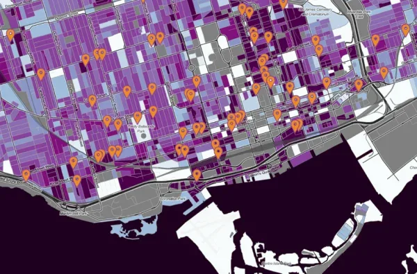
It is important to choose a cannabis retail shop location that the community will endorse- not taking this into account can lead to disaster!
Navigate the complex process of cannabis licensing with guidance from CannDelta. We ensure you have the information for a successful start!

Alterna offers a product suite to equip cannabis retailers with resources such as bank accounts- learn more about Cannabis financing here!
Ready to turn your passion for cannabis into a profitable business? Learn the secrets to opening a successful retail store today!
Canadian cannabis licence holders are revolutionizing international trade, contributing to the exponential growth of this lucrative sector.
Explore how the Canadian cannabis industry, with guidance from Health Canada, not only survived but thrived amidst the COVID-19 crisis.
The latest operational changes to cannabis program requirements mandated by Health Canada. Stay ahead in the ever-evolving industry.
Stay informed on the latest developments in Ontario cannabis retail store authorizations with AGCO. Get the updates you need here!
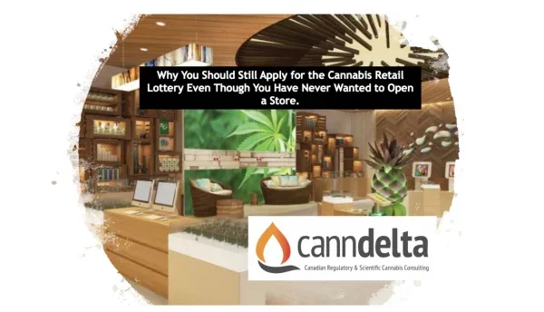
Considering entering the? Don't wait - find out why now is the time to apply and reap the rewards of entering this exciting opportunity!
Learn about AGCO’s Cannabis Retail Lottery application with CannDelta. Let us be your guide to a successful entry into the cannabis retail landscape.
Are you applying for Ontario's Cannabis Retail Application? Learn the steps you need to take to prepare for the process and more!
From licensing to operation, a comprehensive guide for aspiring cannabis microbusiness entrepreneurs in New York.
No articles match — try another category.